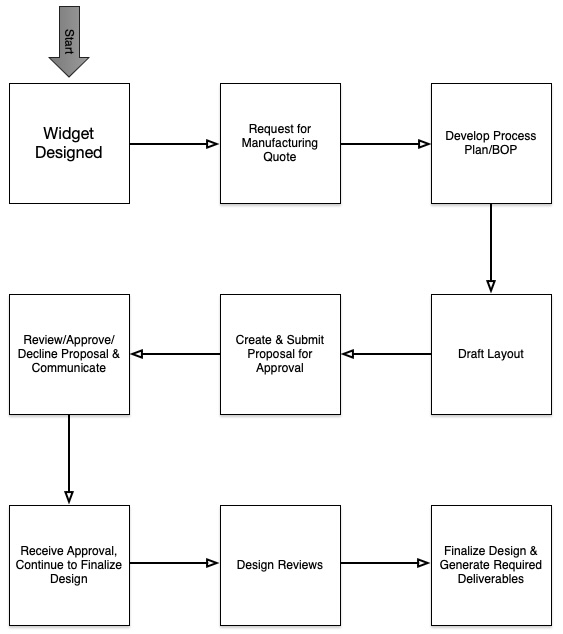
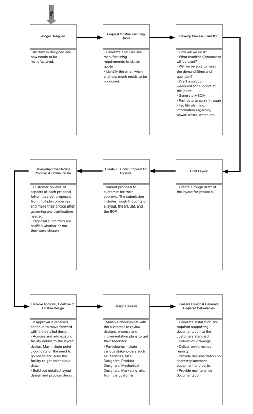
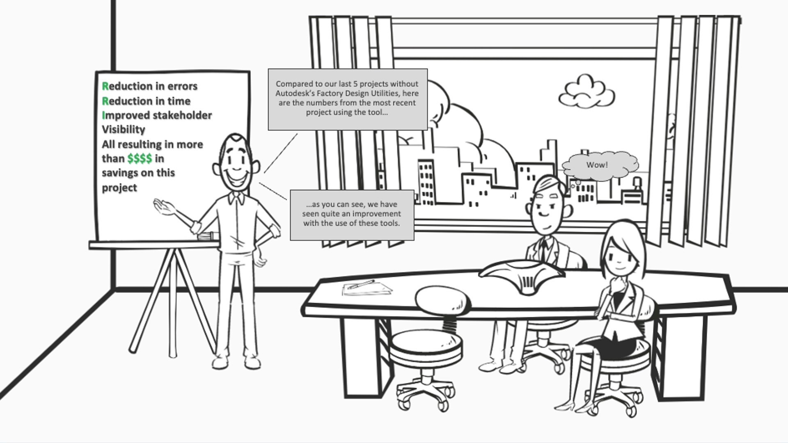
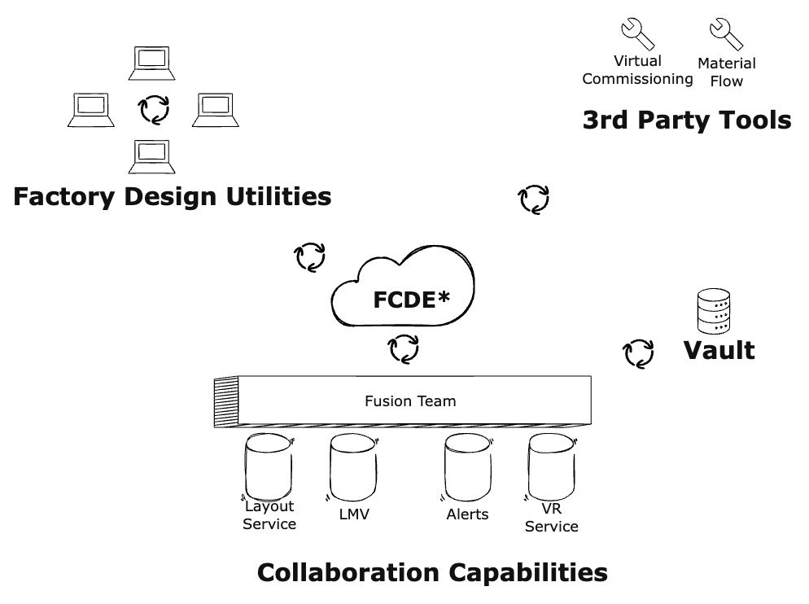
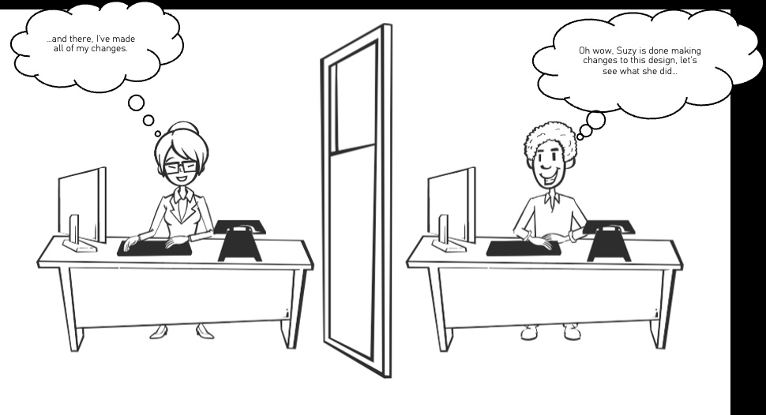
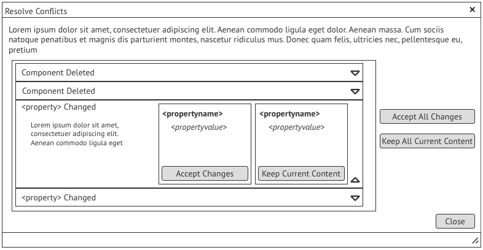

Discovery & research
Research & synthesis
I combined in-depth interviews with survey data to turn assumptions into a strategy.
5 interviews
In-depth sessions with Lighthouse Customers to find pain points they may not have shared yet.
115 responses
Broad surveys with our users to find out where they most often run into problems.
Market research
How factories are moving toward cloud-based systems for multi-user collaboration.
Current issues & solutions
Key opportunities
Beyond technical fixes, research revealed three opportunities to fundamentally shift how teams collaborate.
Multi-user workflows
Centralize technical data to facilitate true multi-user workflows.
Real-time feedback
Ensure design changes are communicated instantly across global teams.
Conflict resolution
Manage concurrent edits without data loss through robust sync.
Mapping the users' process
Overview

Detailed

Establishing the north star
To keep us focused on the “why,” we developed problem statements. These are the ones selected to become our north star:
“In what ways might we enable collaboration and better communication?”
“In what ways might we help customers complete their projects faster, more efficiently, and with fewer errors?”
“In what ways might we allow customers to reuse their data?”
Storyboarding the vision

Architecting the solution
Feedback loop
Iterative validation through Lighthouse Customers kept the vision grounded in real-world challenges.
Connections
The Factory Common Data Environment (FCDE) provides the central source of truth for everyone connected.

Real-time design change alerts
With the FCDE as the single source of truth, we solved the “stale data” problem and could provide a notification system that alerts connected users the moment a layout change occurs.

Conflict resolution
While automatic resolution is the goal, user interaction is required when conflicts can't be resolved automatically.

Outcomes
I aligned global stakeholders and a division VP on a unified product strategy by grounding the vision in validated user needs.
This research and vision directly led to the development of the Factory Common Data Environment (FCDE), moving the product into a cloud-first era.
By interviewing 5 Lighthouse Customers and surveying 115 users, I made sure the technical vision was grounded in actual customer requirements rather than assumptions.
Final thoughts
The work and illustrations shared here are a sampling of the broader vision I developed for the Factory Design Utilities product.
The value shown in this vision led directly to the delivery of the Factory Common Data Environment, which would provide the foundation for everything else.
While priorities shifted, the project remains a standard for how research and alignment can drive platform innovation.